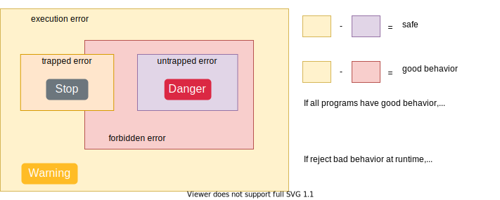
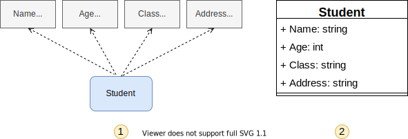

1.3.基本概念
程序和编程语言
程序（Program）告诉计算机应如何完成一个计算任务，这里的计算可以是数学运算，比如解方程，也可以是符号运算，比如查找和替换文档中的某个单词。从根本上说，计算机是由数字电路组成的运算机器，只能对数字做运算，程序之所以能做符号运算，是因为符号在计算机内部也是用数字表示的。 此外，程序还可以处理声音和图像，声音和图像在计算机内部必然也是用数字表示的，这些数字经过专门的硬件设备转换成人可以听到、看到的声音和图像。
程序由一系列指令（Instruction）组成，指令是指示计算机做某种运算的命令，通常包括以下几类：
-
输入（Input）：从键盘、文件或者其它设备获取数据。
-
输出（Output）：把数据显示到屏幕，或者存入一个文件，或者发送到其它设备。
-
基本运算：执行最基本的数学运算（加减乘除）和数据存取。
-
测试和分支：测试某个条件，然后根据不同的测试结果执行不同的后续指令。
-
循环：重复执行一系列操作。
对于程序来说，有上面这几类指令就足够了。任何一个程序，不管它有多么复杂，都是由这几类指令组成的。程序是那么的复杂，而编写程序可以用的指令却只有这么简单的几种，这中间巨大的落差就要由程序员去填了，所以编写程序理应是一件相当复杂的工作。编写程序可以说就是这样一个过程：把复杂的任务分解成子任务，把子任务再分解成更简单的任务，层层分解，直到最后简单得可以用以上指令来完成。
按照对计算机体系结构的抽象层次高低，编程语言（Programming Language）可以分为：
- 低级语言（Low-level Language）：机器语言（Machine Language）和汇编语言（Assembly Language）
- 高级语言（High-level Language）：C、C++、Java、Python等
低级语言直接用机器指令编写程序。高级语言用语句（Statement）编写程序，语句是机器指令的抽象表示。 举个例子，同样一个语句用C语言、汇编语言和机器语言分别表示如下：

上表中的机器语言完全由十六进制数字组成。
最早的程序员都是直接用机器语言编程，这很麻烦，需要查大量的表格来确定每个数字表示什么意思，编写出来的程序很不直观，而且容易出错，于是有了汇编语言。
汇编语言把机器语言中一组一组的数字用助记符（Mnemonic）表示，直接用这些助记符写出汇编程序，然后让汇编器（Assembler）去查表把助记符替换成数字，也就把汇编语言翻译成了机器语言。
从上面的例子可以看出，汇编语言和机器语言的指令是一一对应的，汇编语言有三条指令，机器语言也有三条指令，汇编器就是做一个简单的替换工作 ，例如在第一条指令中，把movl ?,%eax这种格式的指令替换成机器码a1 ?，?表示一个地址，在汇编指令中是0x804a01c，转换成机器码之后是1c a0 04 08（这是指令中的十六进制数的小端表示）。
汇编语和机器指令一一对应，可能只是一种笼统的说法，在某些汇编规范中，可能两者可能并不是一一对应的。
从上面的例子还可以看出，高级语言的语句和低级语言的指令之间不是简单的一一对应关系， 一条a=b+1;语句要翻译成三条汇编或机器指令，这个过程称为编译（Compile），由编译器（Compiler）来完成，显然编译器的功能比汇编器要复杂得多。用高级语言编写的程序必须经过编译转成机器指令才能被计算机执行，编译需要花一些时间，这是用高级语言编程的一个缺点，然而更多的是优点。首先，用高级语言编程更容易，写出来的代码更紧凑，可读性更强，出了错也更容易改正。其次，高级语言是可移植的（Portable）或者称为平台无关的（Platform Independent）。
正因为高级语言和具体的机器指令不存在一一对应的关系，而是和实现不同功能的机器指令集合一一对应，所以高级语言可以实现可移植性。
平台这个词有很多种解释，可以指计算机体系结构（Architecture），也可以指操作系统（Operating System），也可以指开发平台（编译器、链接器等）。不同的计算机体系结构有不同的指令集（Instruction Set），可以识别的机器指令格式是不同的，直接用某种体系结构的汇编或机器指令写出来的程序只能在这种体系结构的计算机上运行。
计算机体系结构也称为指令集体系结构。
然而 各种体系结构的计算机都有各自的C编译器，可以把C程序编译成各种不同体系结构的机器指令，这意味着用C语言写的程序只需稍加修改甚至不用修改就可以在各种不同的计算机上编译运行。各种高级语言都具有C语言的这些优点，所以绝大部分程序是用高级语言编写的，只有和硬件关系密切的少数程序（例如驱动程序）才会用到低级语言。还要注意一点，即使在相同的体系结构和操作系统下，用不同的C编译器（或者同一个C编译器的不同版本）编译同一个程序得到的结果也有可能不同，C语言有些语法特性在C标准中并没有明确规定，各编译器有不同的实现，编译出来的指令的行为特性也会不同，应该尽量避免使用不可移植的语法特性。
总结一下编译执行的过程，首先你用文本编辑器写一个C程序，然后保存成一个文件，例如program.c（通常C程序的文件名后缀是.c），这称为源代码（Source Code）或源文件，然后运行编译器对它进行编译，编译的过程并不执行程序，而是把源代码全部翻译成机器指令，再加上一些描述信息，生成一个新的文件，例如a.out，这称为可执行文件，可执行文件可以被操作系统加载运行，计算机执行该文件中由编译器生成的指令，如下图所示：

有些高级语言以解释（Interpret）的方式执行，解释执行过程和C语言的编译执行过程很不一样。例如编写一个Shell脚本script.sh，内容如下：
#! /bin/sh
VAR=1
VAR=$(($VAR+1))
echo $VAR
定义Shell变量VAR的初始值是1，然后自增1，然后打印VAR的值。用Shell程序/bin/sh解释执行这个脚本，结果如下：
$ /bin/sh script.sh
2
这里的/bin/sh称为解释器（Interpreter），它把脚本中的每一行当作一条命令解释执行，而不需要先生成包含机器指令的可执行文件再执行。如果把脚本中的这三行当作三条命令直接敲到Shell提示符下，也能得到同样的结果：
$ VAR=1
$ VAR=$(($VAR+1))
$ echo $VAR
2

编程语言仍在发展演化。以上介绍的机器语言称为第一代语言（1GL，1st Generation Programming Language），汇编语言称为第二代语言（2GL，2nd Generation Programming Language），C、C++、Java、Python等可以称为第三代语言（3GL，3rd Generation Programming Language）。目前已经有了4GL（4th Generation Programming Language）和5GL（5th Generation Programming Language）的概念。3GL的编程语言虽然是用语句编程而不直接用指令编程，但语句也分为输入、输出、基本运算、测试分支和循环等几种，和指令有直接的对应关系。而4GL以后的编程语言更多是描述要做什么（Declarative）而不描述具体一步一步怎么做（Imperative），具体一步一步怎么做完全由编译器或解释器决定，例如SQL语言（SQL，Structured Query Language，结构化查询语言）就是这样的例子。
程序的调试
编程是一件复杂的工作，因为是人做的事情，所以难免经常出错。据说有这样一个典故：早期的计算机体积都很大，有一次一台计算机不能正常工作，工程师们找了半天原因最后发现是一只臭虫钻进计算机中造成的。从此以后，程序中的错误被叫做臭虫（Bug），而找到这些Bug并加以纠正的过程就叫做调试（Debug）。有时候调试是一件非常复杂的工作，要求程序员概念明确、逻辑清晰、性格沉稳，还需要一点运气。程序的 Bug 分为以下三类：
- 编译时错误
编译器只能翻译语法正确的程序，否则将导致编译失败，无法生成可执行文件。对于自然语言来说，一点语法错误不是很严重的问题，因为我们仍然可以读懂句子。而编译器就没那么宽容了，只要有哪怕一个很小的语法错误，编译器就会输出一条错误提示信息然后罢工，你就得不到你想要的结果。虽然大部分情况下编译器给出的错误提示信息就是你出错的代码行，但也有个别时候编译器给出的错误提示信息帮助不大，甚至会误导你。在开始学习编程的前几个星期，你可能会花大量的时间来纠正语法错误。等到有了一些经验之后，还是会犯这样的错误，不过会少得多，而且你能更快地发现错误原因。等到经验更丰富之后你就会觉得，语法错误是最简单最低级的错误，编译器的错误提示也就那么几种，即使错误提示是有误导的也能够立刻找出真正的错误原因是什么。相比下面两种错误，语法错误解决起来要容易得多。
- 运行时错误
编译器检查不出这类错误，仍然可以生成可执行文件，但在运行时会出错而导致程序崩溃。学习静态语言的时候，要特别注意区分编译时和运行时这两个概念，有些事情在编译时做，有些事情则在运行时做。
- 逻辑错误和语义错误
第三类错误是逻辑错误和语义错误。如果程序里有逻辑错误，编译和运行都会很顺利，看上去也不产生任何错误信息，但是程序没有干它该干的事情，而是干了别的事情。当然不管怎么样，计算机只会按你写的程序去做，问题在于你写的程序不是你真正想要的，这意味着程序的意思（即语义）是错的。找到逻辑错误在哪需要十分清醒的头脑，要通过观察程序的输出回过头来判断它到底在做什么。
调试的过程可能会让你感到一些沮丧，但调试也是编程中最需要动脑的、最有挑战和乐趣的部分。从某种角度看调试就像侦探工作，根据掌握的线索来推断是什么原因和过程导致了你所看到的结果。调试也像是一门实验科学，每次想到哪里可能有错，就修改程序然后再试一次。如果假设是对的，就能得到预期的正确结果，就可以接着调试下一个Bug，一步一步逼近正确的程序；如果假设错误，只好另外再找思路再做假设。当你把不可能的全部剔除，剩下的即使看起来再怎么不可能，但一定是事实。
也有一种观点认为，编程和调试是一回事，编程的过程就是逐步调试直到获得期望的结果为止。你应该总是从一个能正确运行的小规模程序开始，每做一步小的改动就立刻进行调试，这样的好处是总有一个正确的程序做参考：如果正确就继续编程，如果不正确，那么一定是刚才的小改动出了问题。例如，Linux操作系统包含了成千上万行代码，但它也不是一开始就规划好了内存管理、设备管理、文件系统、网络等等大的模块，一开始它仅仅是Linus Torvalds用来琢磨Intel 80386芯片而写的小程序。据Larry Greenfield 说，“Linus的早期工程之一是编写一个交替打印AAAA和BBBB的程序，这玩意儿后来进化成了Linux。”（引自The Linux User's Guide Beta1版）
静态类型和强类型
静态类型、动态类型和强类型、弱类型是两对相对的概念。它们在编程的话题中经常被提到，也是很多争论的来源。对它们发表不恰当的言论，甚至可能会引起圣战。它们都不是具有严谨定义的学术名词。在上世纪70年代，静态类型、动态类型一开始的说法是强类型和弱类型。后来，强、弱类型的原始含义被静、动态类型所指代，于是强、弱类型又有了更多的含义。现在，强类型（strong type）可能更多情况是意味着：一个语言是强健的、健全的（The language is sound）。
实际上，静、动态类型是不太恰当的说法，而强、弱类型的说法更是莫名其妙。这四个名词都与程序的安全性检查有关，它们可以通俗地解释如下：
-
静态类型：编译的时候进行安全性检查
-
动态类型：运行时才进行安全性检查
-
强类型：进行安全性检查时可以拒绝所有（大部分）不安全行为
-
弱类型：进行安全性检查时不会拒绝部分不安全行为
对于基于类型系统的语言，安全性检查大部分都是类型检查（Type Check）。可以发现，这四个名词和“类型”没有直接的关系，它们都是编译器的行为。它们更准确的说法应该是：静态检查、动态检查、强检查、弱检查。
静态检查和动态检查的区别在于安全性检查（类型检查）发生的时机不同，而强检查和弱检查的区别在于安全性检查程度的强弱，至于强弱的边界在哪里，并没有明确、统一的定义。正如上面提到的，这四个名词的含义存在很多争议，不同的人可能有不同的看法。
对于静、动态类型的区分，至少存在以下观点：
- 能不能在运行时改变变量的类型
- 能不能在运行时动态地扩展一个类型
对于强、弱态类型的区分，至少存在以下观点：
-
能不能在运行时改变变量的类型
例如，C 语言之父 Dennis Ritchie 曾经说 C 语言是一种“强类型但是弱检查”的语言，因为那时候还没有静、动态类型和强、弱类型之分。
-
是否对变量类型进行隐式转换（隐式转换可能导致安全性问题）
强、弱类型概念的出现是为了对编程语言进行区分，但它们的含义过于单一以及表面化，而编程语言的差异体现在多个维度上，因此有人提出了“type safety”、“memory safety”等区分维度，也出现了与强弱类型存在交集的静、动态类型。实际上，这四个名词对理解编程语言的本质并没有帮助，因为争论一些东西叫什么名字是没有意义的。只要人们愿意，我们甚至可以给一些编程语言分类为dogshit typed language。因此之后的文章不会专门使用这四个名词，即使有提到，也会用静动态检查、强弱检查替代，以避免歧义和圣战。
关于这四个概念更多的说明，可以参考《Type Systems》论文 (Luca Cardelli [Microsoft Research], 2004)。这篇论文研究了编程语言不同的类型系统。以下的论述引用自该论文，对这四个名词作了较为严谨的定义。

如上图所示，程序的执行错误 (execution errors) 可以分为如下两种：
- trapped errors（被捕获的错误）: 导致程序立即终止执行的错误。
- untrapped errors（未被捕获的错误）: 出错后程序继续运行，可能导致意外的行为（如缓冲区溢出）。
对于任意的编程语言，可以将execution errors的某个子集定义为 forbidden errors。
一个程序运行时不会出现untrapped errors，称为安全的 (safe)。一个语言的所有程序都不会出现untrapped errors，则称为安全的语言 (safe language)。
forbidden errors：包括所有untrapped errors以及trapped errors的某个子集。
注意：空集是任意集合的子集。
如果程序在运行时不会出现任何forbidden errors，则称为 good behavior，否则称为 bad behavior。
如果一个语言的所有程序都是 good behavior 的，则称该语言为 strongly checked language，否则为weakly checked language。
在编译时拒绝 bad behavior 的语言称为 statically checked language。
如果在运行时拒绝 bad behavior 的语言称为 dynamically checked language。
注意：这里说拒绝 bad behavior 是指存在拒绝 bad behavior 的行为，但不一定能拒绝全部的 bad behavior。
如果是基于类型系统的语言，static checking 或 dynamic checking 大部分都是类型检查，因为类型系统本身就具有保障安全性的功能。
出于性能的考虑，有些语言本身就被设计为不安全的，例如C语言。在运行时为了确保安全性而进行检查，其（性能）代价是昂贵的。即使在编译时进行大量的静态检查，实现安全性也需要付出一些代价，例如通常无法在编译时完全消除数组索引出界的问题。因此，一些语言可能会同时使用静态检查和动态检查。这些语言可能仍然被称为静态检查语言，部分原因是它们的动态检查是基于静态类型系统的，即动态检查的算法和静态检查的算法兼容。
变量及其行为
变量（Variable）是编程语言最重要的概念之一。
变量是计算机中一块命名的内存空间，该内存空间的大小由变量的类型决定。 该内存空间用于存储一个值（Value），储存的值是可以随时改变的，比如这次存储字符'a'，下次存储字符'b'，但是该内存空间的地址是不变的。正因如此，我们称之为变量。
在静态语言中，变量的内存地址是不变的，但在动态语言中，变量的内存地址往往是会改变的。
或者说，变量是一种使用方便的占位符，用于引用计算机内存地址，实际上变量是内存及其地址的抽象。在汇编语言中，程序员为了操作内存需要直接使用内存地址，但在高级语言中，程序员只需要对变量进行操作，就可以操作变量对应的内存空间。
占位符：先占住一个固定的位置，等待值添加到该位置的符号。
变量拥有一个标识符（变量名）和一个值。该标识符会被储存在符号表（symbol table）之中。符号表储存了变量的变量名、变量对应的内存空间的地址、变量值的类型。
不要弄混变量和变量名，变量名是标识符的一种。
变量的行为一共有四种：声明、定义、初始化、赋值。
声明：告诉编译器/解析器有这个变量的存在，这个行为不分配内存空间。
定义：为变量分配内存空间。
实际上，从广义的角度来说，声明有两种：
-
引用性声明（defining declaration）：不需要建立储存空间的声明，例如
extern in a中的变量a已经在别的文件中被定义。 -
定义性声明（referencing declaration）：需要建立储存空间的声明，例如
int a在声明时就建立了a的储存空间。
可见从广义的角度来说，声明包含了定义，而并非所有的声明都是定义。一般的情况下我们常常这样叙述，把建立空间的声明称之为"定义"，而把不需要建立存储空间称之为"声明"。
定义和声明的本质区别就是：定义会给变量分配内存空间，而声明则不会。
初始化：在定义变量之后，系统为变量分配的内存空间内并没有值，此时值是不确定的。为保证程序的安全性和确定性，需要对这个内存空间进行初始化。初始化一般伴随着定义而产生。初始化是从无到有的过程。
如果变量的定义没有初始化，那这个最初分配的空间的值可能是随机的（内存空间上原来存储的值），也可能会被赋予一个默认值。这取决于具体编程语言的特性。不经过初始化的变量可能会为程序带来不安全与不确定性。
赋值：赋值是变量值的刷新操作。赋值是从旧到新的过程。
在静态检查语言和动态检查语言中，变量的表现是不一样的。
在静态检查语言中（例如：C、C++），变量虽然可以声明多次，但只能定义一次，因此，变量在定义后，其变量名和一个类型永久绑定。这正是静态检查语言的关键特性，如果变量名可以动态地和不同的类型绑定，类型检查将变得很困难。因为变量的新值和旧值的类型是一样的，所以新旧值所需的内存空间大小也是一样的，因此，赋值可以覆盖内存空间的旧值，而无须分配一个新的内存空间，也不会（无需）改变符号表中内存空间地址和变量名的映射关系。
所以在静态检查语言中，人们一般说变量是有类型的。
而在动态检查语言中（例如Python、Ruby），对变量赋值不需要先声明类型，赋值可以将变量名与新的类型绑定。这是动态类型语言的关键特性。因为变量的新值和旧值的类型不一定是一样的，所以赋值时需要分配一个新的内存空间储存新值，同时符号表中变量名与旧值地址的映射改为变量名与新值地址的映射。
所以在动态检查语言中，人们一般说变量没有类型，甚至说没有变量。例如，在Python中，有些人会认为Python没有变量，只有名字。但实际上，很可能只是因为静态语言比动态语言先出现，很多人一开始学习的编程语言也是静态语言，所以他们认为一个变量应该具有静态语言中变量所具有的特征，否则就不能称为变量。
在计算机领域中，人们往往会把一个概念与具体的实现结合起来，认为这个具体的实现所具有的特征是这个概念本身应有的特征。
形象来说，对于静态检查的语言，变量就像一间房子，变量名相当于房子的门牌号，我们可以根据门牌号来找到对应的房子。这个房子今天里面住着米奇，明天米奇搬走了，换成杰瑞住进来，因为米奇和杰瑞都是mouse，不需要对房子进行改造，因此房子的位置、空间大小都是没有改变的。后来，汤姆也想住进房子里面，于是把杰瑞赶跑了，但是汤姆发现这个房子太小了，根本住不了，汤姆只好在别的地方新建了一个大房子，并贴上了杰瑞房子的门牌号。
基本术语解释
引用（reference ）：一个可以让程式间接存取于电脑记忆体或其他储存装置中一特定资料的值。一般而言，引用会是资料储存于记忆体或储存装置中的实体位址 。因此，引用亦常被称为 该资料 的指针或地址。
标识符（identifier，缩写为ID）：又称为识别码，是一个用来识别不同对象的名称。
在编程语言中，标识符就是程序员自己规定的具有特定含义的词，比如函数名、方法名、类名，变量名、常量名等。
对象（object）：是一个内存空间，其中储存着值，可能有标识符指向该内存空间的地址。台湾将其译作物件。对象是某个类的实例。我们将数据和对数据的操作融为一体，形成具有静态信息和动态行为的对象。
每个对象都具有一个ID、一个类型、一个值。对象一旦建立，ID便不会改变。这里所说的ID是是对象在内存中的地址，而不是identifier。
对象可以视为广义的数据，因此和普通数据一样属于某种数据类型。
标识符并不是对象的属性，一个对象可以指向不同的标识符。而管理这些名字（标识符）的事物就是“命名空间”。
命名空间（Namespace）：名字（标识符）到对象的 映射。命名空间的作用是解决变量命名冲突的问题。
各个命名空间是独立的，没有任何关系的，所以同一个命名空间中不能有重名变量，但不同的命名空间可以存在重名变量而没有任何影响。
作用域（Scope）：本质是一块文本区域，即变量标识符的作用范围，这里的”作用“具体是指可以直接访问相应的命名空间。作用域限定了可以访问的命名空间，同一个命名空间可以同时被多个作用域访问。
名字的作用域：该名字可以影响到的代码文本区域。
命名空间的作用域：该命名空间可以影响到的代码文本区域。
直接访问：在面向对象的编程语言中（如Python），不加 . 的访问为直接访问，反之为属性访问。
面向对象编程：基于对象概念来分析问题和设计程序，这就是面向对象编程（object-orientation programming，简称OOP）。通过OOP所得到的程序是一个由很多对象组成的系统，可以向对象发送消息来实现对数据的处理，全体对象通过相互协作来完成程序的数据处理功能。
面向过程编程：得到的程序是一组对数据进行操作的过程，通过按顺序执行这些过程来实现程序功能。
类的概念
在编程时，某一段代码要处理的数据类型往往是固定的，或者是类似的。为了更方便地操纵数据，人们将数据和操纵该数据的代码绑定，称之为类。类是类型概念的发展。 类可以视为广义的数据，因此和普通数据一样属于某种数据类型。
用编程语言解决问题时，首先需要明确问题中涉及哪些数据，并在程序中将这些数据用编程语言提供的数据类型表示出来，然后再去考虑需要对这些数据执行何种操作。这是面向对象编程的思想。
数据类型是对现实中的数据的抽象，相同或相似的数据类型支持相同的操作，例如整数类型和浮点数类型的数据都支持+运算。
大多编程语言都提供了基本的数据类型，例如整数类型、浮点数类型、字符类型等等。但实际问题中往往涉及很复杂的数据，不能用基本数据类型直接表示。为了表示复杂数据，大体有两种办法：
1.一将复杂数据分解成若干个简单数据项，每个数据项可以用基本数据类型表示。
这是C语言中常用的方法，因为C语言提供了一些基本的数据类型，但是不支持自定义类型。
2.让程序员自定义新的数据类型，以便对复杂数据进行直接的、整体的表示。
可以自定类型是支持面向对象编程范式的必要条件。
例如，一个学生的信息包括姓名、年龄、班级、住址等等。这些基本信息可以用多种基本的数据类型（如整数类型、字符串类型）分别表示，如图1。但这不是好办法，因为这种表示法丢失了数据的整体性，在维护姓名、年龄、地址等数据间的联系时很麻烦。
第二种解决办法是将学生的信息视为一个整体，用一种数据类型表示，如图2。因为编程语言中没有现成的类型能够表示该数据，所以我们需要为这种数据值定义新的数据类型——Student类型。

Student类型实际上是在内部将string、int类型组合起来，这可能被称为复合类型（composite data type, aggregate data type）。
由此，我们从传统的数据类型概念发展出了“类”的概念。类（class）是广义的数据类型，能够定义复杂数据的特性，包括静态特性（即数据）和动态特性（即对数据的操作方法）。类的实例称为对象。
参考
-
具体来说，就是内存。 ↩